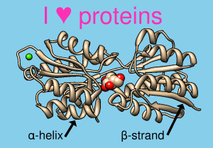
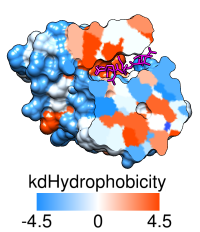

|  |
2D Labels allows adding text, symbols, and arrows to the display. This is useful for annotating images and movies. The labels exist in the X,Y plane (the plane of the screen) and do not have a “depth” (Z-coordinate); they appear in front of any graphics displays and will not move when models are moved. Multiple colors and sizes of 2D labels can coexist. Text and symbols are laid out horizontally, whereas arrows can be oriented in any direction in the plane. (Symbols also include various arrows in different orientations, but cannot be oriented arbitrarily.) For 3-dimensional arrows, see BILD format.
2D Labels information is saved in sessions. 2D labels can also be saved to and read from a separate label file.
There are several ways to start 2D Labels, a tool in the Depiction and Utilities categories. 2D Labels is also implemented as the command 2dlabels. Starting 2D Labels opens a dialog with the following tabbed sections:
Clicking the tab for a section brings it to the front. Close dismisses the 2D Labels dialog, and Help opens this manual page in a browser window. Labels:Arrows:Use mouse for label placement (near the bottom of the dialog) is automatically turned on. This option reassigns the left mouse button to labeling: clicking in the graphics window starts a new 2D label, and previously created 2D labels can be repositioned by dragging. Unchecking the option or closing the 2D Labels dialog returns the left mouse button to its previous function (by default, rotation of models).
The top part of the dialog lists the existing 2D labels and their (lower left-hand corner) X,Y coordinates. The X axis is horizontal and the Y axis is vertical, and both range from 0 to 1 in the visible portion of the window. It is possible to place a label partially or completely outside the visible area. The Shown checkboxes allow hiding/showing individual labels. All 2D labels collectively can be hidden and shown with the Hide All and Show All buttons.
Typing into the Text area defines the content of the active label. A label can include letters, numbers, and various symbols present on the keyboard, as well as spaces and carriage returns. Many other symbols such as Greek letters can also be included, as described below.
The Insert symbol menu provides easy access to several commonly used symbols. Choosing a symbol from the menu inserts it into the active label. Choosing more... from the bottom of the menu shows many more symbols in a browser window, from which a symbol can be copied and then pasted into the Text area of the 2D Labels dialog. Symbols from other sources can also be incorporated using standard copy-and-paste operations.
As text is entered, it will appear in the graphics window according to the current settings:
The properties of an existing label can be changed by first making it the active label and then changing the setting. The color or font of part of an existing label can be changed by making it the active label, highlighing the portion to be changed within the Text area, and then changing the setting.
- Color (a color well)
- Font size (default 24)
- Font style
- normal (default)
- italic
- bold
- bold italic
- Font typeface
- sans serif (default)
- serif
- fixed
- Use solid label background - whether to place a colored rectangle under the label text, and if so:
The label background settings of the active label can applied to all labels by clicking Apply.
- Label background color (a color well, default semitransparent black) - color of the rectangle
- Margin around text (default 9) - how far beyond the label text in each direction (left, right, top, and bottom) to extend the rectangle, in pixels
- Outline around margin (default 0) - pixel width of an additional outline around the rectangle, set automatically to white for dark rectangle colors or black for light rectangle colors
Clicking Delete deletes the active label.
For purposes of manipulation with the 2dlabels command, 2D labels created with the graphical interface are assigned names label2d_id_0, label2d_id_1, label2d_id_2, etc. in order of creation.
2D labels (including text, symbols, and 2D arrows) can be written to or read from a file using the File menu in the 2D Labels dialog. 2D label files allow transferring labels from one Chimera session to another, saving label work without saving an entire session file, and hand-editing the files to obtain more precise label positions than easily afforded by interactive dragging. A simple text format is used (see the example file):Use mouse for arrow placement (near the bottom of the dialog) is automatically turned on. This option reassigns the left mouse button so that clicking and holding the button down starts a new 2D arrow, dragging extends the arrow, and releasing defines the location of the tip. A previously created arrow can be reoriented or its length changed by dragging from either end, or it can be moved without reorientation by dragging from its middle third. Unchecking the mouse option or closing the 2D Labels dialog returns the left mouse button to its previous function (by default, rotation of models).
The top part of the dialog shows the existing 2D arrows and their start and end (tip) X,Y coordinates. The X axis is horizontal and the Y axis is vertical, and both range from 0 to 1 in the visible portion of the window. The color of an existing arrow can be changed by clicking its color well and using the Color Editor. The Shown checkboxes allow hiding/showing individual arrows. All 2D arrows collectively can be hidden and shown with the Hide All and Show All buttons.
The 2D arrow most recently created, moved, or clicked within the top part of the dialog is the active arrow. The weight or arrowhead style of an arrow can be changed by first making it the active arrow and then changing the setting. Delete deletes the active arrow.
- Arrow weight (default 1.0) - a scale factor for the overall thickness of the arrow
- Arrowhead style
- solid (default)
- pointy
- blocky
- pointer
|
Surface rendered by kdHydrophobicity: |
|---|
|  |
Color Key allows creation and placement of a color key bar and associated labels in two dimensions. The labels can include symbols. Color Key information is saved in sessions. See also: 2D Labels, Scale Bar
There are several ways to start Color Key, a tool in the Depiction and Utilities categories. In addition, there are buttons in Render by Attribute, Surface Color, and Coulombic Surface Coloring to start this tool and populate it to match the current coloring scheme. It is also implemented as the command colorkey.
Use mouse for key placement (near the bottom of the dialog) is automatically turned on when Color Key is started. This option reassigns the left mouse button to color key creation and placement: clicking and dragging sets the location of opposing corners of the color key rectangle, or color bar. A key can be vertical or horizontal. A previously created color key can be moved by grabbing near its center and dragging, but clicking anywhere else will delete the color key and start over. Only one color key can exist at a time. Unchecking the mouse option or closing the Color Key dialog returns the left mouse button to its previous function (by default, rotation of models).
Any desired changes to the Number of colors/labels should be applied first, as changing the number will erase prior color/label specifications. A color can be changed by clicking the corresponding color well and using the Color Editor. Label text can be entered directly or pasted (including symbols) into the corresponding fields.
The color/label pairs from top to bottom in the dialog will be arranged from top to bottom in a vertical key and from left to right in a horizontal key. Reverse ordering of above repopulates the color/label values in the reverse of the current order.
Additional options:
Delete deletes the color key display without changing the color/label settings in the dialog. Close dismisses the Color Key dialog, while Help opens this manual page in a browser window.